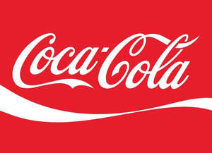

Trade Mark Journal No.2025/024 13 June 2025
UK00004204906 16 May 2025 (3,6,8,9,11,14,16,18,20,21,24,25,28,32,33)

- Class 3
- Toiletries; Tailors' and cobblers' wax; Soaps and gels; Skin, eye and nail care preparations; Perfumery and fragrances; Oral hygiene preparations; Make-up; Household fragrances; Hair removal and shaving preparations; Hair preparations and treatments; Essential oils and aromatic extracts; Deodorants and antiperspirants; Cleaning and fragrancing preparations, other than for personal use; Body cleaning and beauty care preparations; Bath preparations; Animal grooming preparations.
- Class 6
- Works of art and decorations, including sculptures, made primarily of non-precious metals; Vaults and safes, of metal; Unprocessed and semi-processed non-precious metals and their alloys; Signs, and information and advertising displays, of metal; Metal hardware; Locks and keys, of metal; Ladders and scaffolding, of metal; Doors, gates, windows and window coverings of metal; Dispensers, of metal; Containers, and transportation and packaging articles, of metal; Packaging, wrapping and bundling articles, of metal; Nuts, bolts and fasteners, of metal; Monuments and memorials made primarily of non-precious metals; Molds of metal.
- Class 8
- Body art tools; Cutlery, kitchen knives, and cutting implements for kitchen use; Cutting, drilling, grinding, sharpening and surface treatment hand tools; Hair styling appliances; Hair cutting and removal implements; Hand-operated hygienic and beauty implements for humans and animals; Manicure and pedicure tools; Agricultural, gardening and landscaping tools; Hand-operated tools and implements for treatment of materials, and for construction, repair and maintenance; Hand tools for construction, repair and maintenance.
- Class 9
- Alarms and warning equipment; Application software; Artificial intelligence and machine learning software; Audio/visual and photographic equipment; Broadcasting equipment; Calculators; Coin-operated mechanisms; Communications equipment; Computer components and parts; Computer networking and data communications equipment; Computers and computer hardware; Content management software; Controllers and regulators; Corrective eyewear; Data and file management and database software; Data loggers and recorders; Data processing equipment and accessories (electrical and mechanical); Data storage devices and media; Databases; Display devices, television receivers and film and video devices; Diving equipment; Downloadable and recorded content; Earbuds; E-commerce and e-payment software; Electric cables and wires; Electrical and electronic components; Encoded, magnetic and smart cards; Eye protection; Games software; Glasses, sunglasses and contact lenses; Head protection; Image capturing and developing equipment; Image scanners; Information technology and audio-visual, multimedia and photographic equipment; Loudspeakers; Magnets, magnetizers and demagnetizers; Measuring, detecting, monitoring and controlling equipment; Measuring equipment; Media and publishing software; Media content; Microphones; Navigation, guidance, tracking, targeting and map making equipment; Office and business applications; Optical enhancers; Phones, mobile phones, smartphones, and accessories therefor; Printers, photocopiers, scanners and image processors, and unfilled cartridges for these; Protective and safety equipment; Safety, security, protection and signalling devices; Scientific and laboratory equipment for treatment using electricity; Signalling apparatus; Software; Sunglasses; Web application and server software; Virtual and augmented reality software; Time measuring instruments (not including clocks and watches); Temperature measuring equipment.
- Class 11
- Apparatus for heating and steaming items and fabrics, not for industrial purposes; Cooking, heating, cooling and preservation equipment, for food and beverages; Decorative fountains, sprinkler and irrigation systems; Fireplaces; Heating elements and filaments; Heating, ventilating, and air conditioning and purification equipment (ambient); Lighting and lighting reflectors; Personal heating and drying implements; Refrigerating and freezing equipment; Water purification, desalination and conditioning installations; Steam baths, saunas and spas.
- Class 14
- Gemstones, pearls and precious metals, and imitations thereof; Jewellery; Jewellery boxes and watch boxes; Key rings and key chains, and charms therefor; Time instruments; Works of art and decorations, including sculptures, made primarily of precious or semi-precious metals or stones, or their imitations, or coated with these.
- Class 16
- Writing and stamping implements; Works of art and decorations, including figurines, made primarily of paper or cardboard, and architects’ models; Printing and bookbinding equipment; Printed Vouchers; Printed matter, and stationery and educational supplies; Printed books, magazines, newspapers, and other paper-based media; Photo albums and collectors' albums; Paper and cardboard; Office machines; Money holders; Industrial paper and cardboard; Filtering materials of paper; Educational equipment; Correcting and erasing implements; Bags and articles for packaging, wrapping and storage, of paper, cardboard or plastics; Art and modelling materials and media; Adhesives for stationery or household purposes.
- Class 18
- Luggage, bags, wallets and other carriers; Saddlery, whips and apparel for animals; Umbrellas and parasols; Walking sticks.
- Class 20
- Animal housing and beds; Barrels and casks, non-metallic; Baskets, non-metallic; Bathroom furniture; Beds, mattresses, pillows and cushions; Cable fasteners, connectors and holders, non-metallic; Closures for containers, non-metallic; Clothes hangers, clothes stands [furniture] and clothes hooks; Containers, and closures and holders therefor, non-metallic; Crates and pallets, non-metallic; Displays, stands and signage, non-metallic; Door, gate and window fittings, non-metallic; Fasteners, non-metallic; Frames; Indoor blinds, and fittings for curtains and indoor blinds; Ladders and movable steps, non-metallic; Letter boxes, non-metallic; Locks and keys, non-metallic; Mannequins and tailors' dummies; Mirrors (silvered glass); Mooring buoys, non-metallic; Pipe fasteners, connectors and holders, non-metallic; Unworked and semi-worked bone, shell, amber, reed, bamboo, rattan or cork, or substitutes for these; Valves, non-metallic; Works of art and decorations, including sculptures, made primarily of wood, straw, bone, shell, wax, resin, plastics or plaster, or of substitutes for these.
- Class 21
- Air fragrancing apparatus; Aquaria and vivaria; Articles for the care of clothing and footwear; Cosmetic, hygiene and beauty care utensils; Dental cleaning articles; Coin banks (Piggy banks); Dustbins for household purposes; Glasses, drinking vessels and barware; Household utensils for cleaning, brushes and brush-making materials; Tableware, cookware and containers; Toilet and bathroom cleaning utensils; Unworked and semi-worked glass, not for building; Works of art and decorations, including sculptures, made primarily of ceramics or glass, or of substitutes for these; Cleaning articles.
- Class 24
- Wall hangings; Textile goods, and substitutes for textile goods; Linens; Labels of textile; Kitchen and table linens; Filtering materials of textile; Fabrics; Curtains; Coverings for furniture; Bed linen and blankets; Bath linen.
- Class 25
- Underwear and nightwear; Parts of clothing, footwear and headgear; Headgear; Footwear; Clothing.
- Class 28
- Video game apparatus, arcade games, and amusement machines; Toys, games, and playthings; Table-top games and gambling devices; Swimming equipment; Sporting and physical exercise equipment; Festive decorations, party novelties and artificial Christmas trees; Fairground and playground apparatus.
- Class 32
- Soft drinks, including cola soft drinks.
- Class 33
- Alcoholic cocktail mixes.
The Coca-Cola Company
Representative: Beverage Services Limited